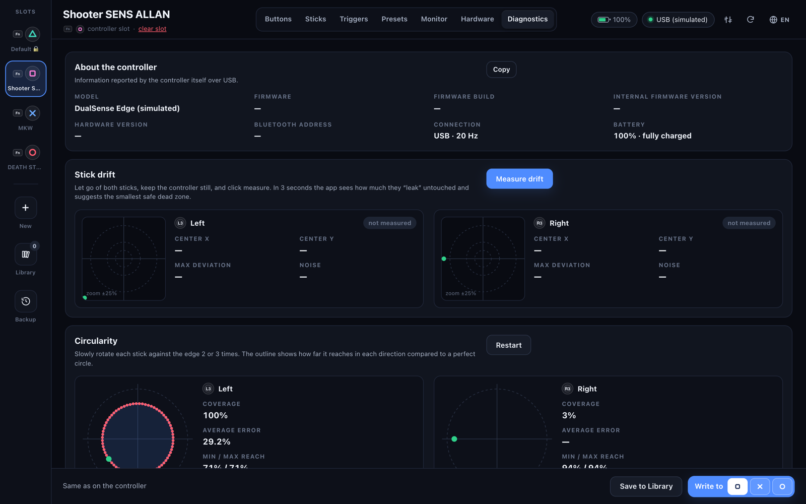
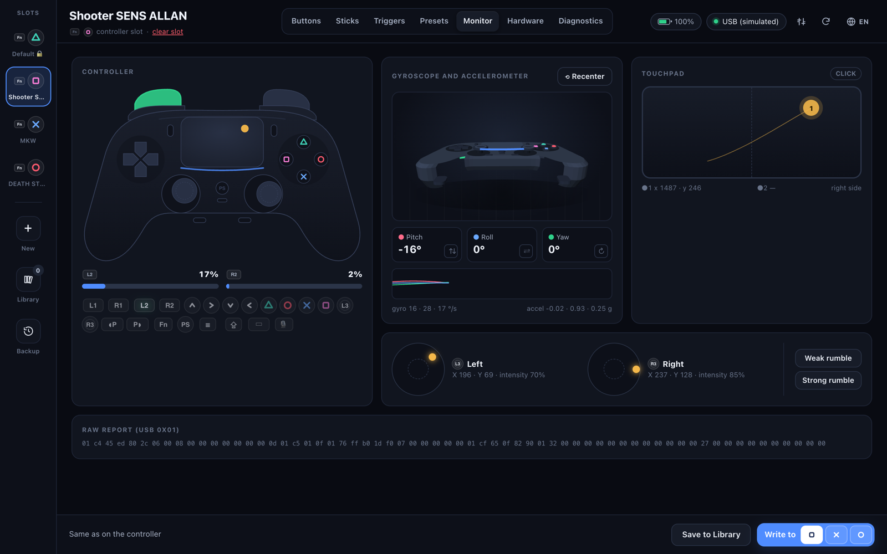

The Problem: A Pro Controller Whose Settings Live on a Console
The DualSense Edge is Sony's "pro" controller: back paddles, swappable stick modules, adjustable trigger travel — and four on-board profiles you switch with FN + △ / □ / ✕ / ○. Each profile remaps buttons, reshapes the stick response curves and cuts the trigger range. The catch is where you edit them: on a PS5. The profiles are stored in the controller, but the only official editor is a menu on the console.
That's fine if the controller lives next to a PS5. Use it with a Mac, though, and there was no native way to touch those profiles at all. You could play with the controller, you just couldn't change how it played.
DualSense Edge Studio is the fix: a native macOS app that reads all four slots over a USB cable, lets you edit buttons, sticks and triggers in a proper UI, and writes the result back to the controller. No PS5, no browser. Like everything on this site, it was built in back-and-forth with Claude.
What It Does
Plug the controller in, open the app, and the sidebar fills with the four slots. Everything you change is a draft: nothing reaches the controller until you click Write to □ / ✕ / ○.
There's also a preset gallery (FPS, Battle Royale, Racing, Fighting, Sports, Accessibility), side-by-side profile comparison, a menu-bar icon with battery and the active profile, and JSON import/export compatible with the edge-config.com web editor, so libraries move freely between the two.
Talking to the Controller: 64-Byte Feature Reports
Over USB the Edge is a HID device (Sony's vendor ID 0x054C, product 0x0DF2), and the profiles travel as feature reports — fixed 64-byte packets where byte 0 is the report ID. One profile doesn't fit in 64 bytes, so each slot is split across three of them:
| Slot | Read | Write | Clear (0x68) |
|---|---|---|---|
| △ Default | 0x70–0x72 | never | – |
| □ | 0x73–0x75 | 0x60 | 2 |
| ✕ | 0x76–0x78 | 0x61 | 3 |
| ○ | 0x79–0x7B | 0x62 | 4 |
Inside those three parts the layout is wonderfully awkward. The profile name is UTF-16LE and doesn't fit in one part, so it starts in part 0 and spills into part 1 (40 code units in total). Part 1 also holds a 16-byte profile ID and the stick curves — except the right stick's curve is 6 bytes and only 4 fit, so the last two continue at the top of part 2. Part 2 has the trigger ranges, the 16-entry button table, the curve types, and the time the profile was saved, as a 48-bit millisecond timestamp.
The button table is the elegant bit: 16 positions, one per physical button, and each value says which function that button now performs. Identity (0, 1, 2 … 15) means "nothing remapped". Making the right paddle act as ○ is a single byte.
Two CRC32s, and a Magic Seed
The controller won't accept a profile unless it's checksummed — twice. There's a profile CRC covering the content of all three parts stitched together (170 bytes), and then each 64-byte report carries its own CRC in its last four bytes. That second one has a twist: it isn't computed over the report alone, but over the report with an extra byte, 0xA3, in front of it. Both have to be right for the controller to take the profile.
// Profile CRC: parts 0 and 1 (bytes 2–59) + part 2 (bytes 2–55) = 170 bytes
function profileCrc(parts) {
const r = new Uint8Array(170);
r.set(parts[0].slice(2, 60), 0);
r.set(parts[1].slice(2, 60), 58);
r.set(parts[2].slice(2, 56), 116);
return crc32(r);
}
t[2].set(le32(profileCrc(t)), 56);
// Per-report CRC: seed byte 0xA3, then the report, stored in bytes 60–63
for (const a of t) a.set(le32(crc32(new Uint8Array([0xa3, ...a]))), 60);Both are plain IEEE CRC32, little-endian. The whole protocol layer — slots, curves, CRCs, the input report — lives in one dependency-free file, proto.js, and the byte-by-byte map is written up in the repo's PROTOCOL.md.
Byte-Exact or It Doesn't Ship
Not every byte in those reports is understood. So the encoder never builds a profile from zeros: it starts from the original bytes read from the controller (kept as profile.raw), overwrites only the fields the app actually edits, stamps the time, and recomputes the CRCs. Anything unknown passes through untouched.
That made a strict test possible, and it became the bar for the whole protocol: read a profile the PS5 saved, re-encode it without changes, and compare. The result has to be the exact same bytes, with the same CRC. Then write a profile and read it back — again, identical. Only once both round trips matched on a real controller did writing go in.
A Native Layer That Says No
Writing to a controller's memory deserves guard rails, and the most important one isn't in the UI — it's in the native code. The Objective-C side only forwards feature reports 0x60–0x63 (the slot writes) and 0x68 (clear a slot); any other report ID is rejected before it reaches the device. The only output report allowed is 0x02 — lights, rumble and trigger effects, none of which are stored. Even if the UI had a bug, it couldn't talk the controller into anything else.
- The △ slot — the default profile — is read but never written or cleared.
- Before every write, clear or restore, the slot's current contents go into a history (up to 60 copies), so any change is one click from undone.
- After a write, the app reads the slots back to confirm what actually landed.

The Stack: Objective-C Underneath, a Web UI on Top
The app is two layers. src/main.m is a single Objective-C file: it opens the controller with IOKit HID, streams the input report up to the UI, performs the feature-report reads and writes, and owns the window, the menu-bar item, battery notifications and files. Everything else — the profile logic, the protocol, every screen — is plain HTML, CSS and JavaScript loaded in a WKWebView. No bundler, no npm, no dependencies. Building takes Apple's Command Line Tools and one ./build.sh, which produces a universal app for Apple Silicon and Intel.
The seam between them is a small message bridge: the UI calls Native.call(cmd, args) and gets a Promise back, the native side pushes events (status, input, error). And because that bridge is the only door, it's easy to fake: open web/index.html in a normal browser and native.js swaps in a simulator with sample slots and synthetic input. This is how the UI can be worked on without a controller on the desk — and every screenshot in the README was taken in simulator mode.

Version 1.1 added nine languages — English, Portuguese, Spanish, French, German, Italian, Russian, Simplified Chinese and Japanese. The source strings are Portuguese and act as their own keys (T("…") in JS, L(@"…") in Objective-C), and the native side reads the very same translation files as the web UI, so menus, notifications and screens never disagree. A small script, i18n_check.py, flags any missing translation or mismatched placeholder. The release build is signed with a Developer ID and notarized by Apple, so it opens like any other Mac app.
Built with Claude
Same as every project here: I'm not a programmer. I'm someone who owns the controller, wanted to tune it from a Mac, and could describe exactly what the app should do. Claude did the heavy lifting on the code; I did the testing with a real controller on the desk — which, for a project that writes to hardware, is the part that can't be skipped.
The byte-exact round trip was the conversation that mattered. It turned "I think the protocol works" into a yes-or-no test, and every change to the encoder after that had to pass it again.
The Result
DualSense Edge Studio is free and open source (MIT), for macOS 12 Monterey or later on Apple Silicon and Intel. Download the notarized .dmg, drag the app to Applications, connect the controller with a USB cable and open it. Profiles can't be edited over Bluetooth — same as on the PS5.
Download and details: the project page · source and docs on GitHub.